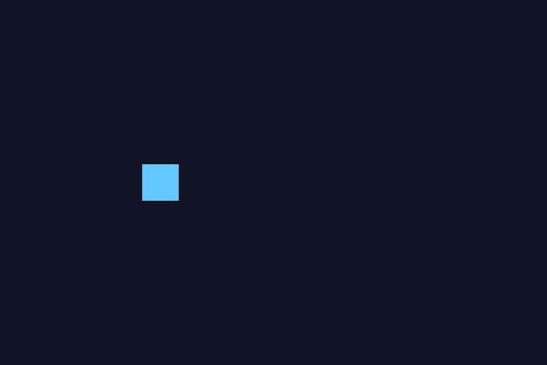

Глава 20 · Разработка игр с Pygame
Создаём окно игры и первый игровой цикл
Игровой цикл — сердце любой игры на Pygame: он пишется вручную, кадр за кадром.
Создаём окно игры
Экран Pygame — обычная поверхность (Surface) заданного
размера:
igrovoj_ekran.py
import pygame
pygame.init()
screen = pygame.display.set_mode((600, 400))
pygame.display.set_caption("Моя первая игра")Игровой цикл
В отличие от Tkinter с его mainloop(), в Pygame игровой цикл
пишут вручную — это даёт полный контроль над тем, что происходит на каждом кадре:
igrovoj_cikl.py
clock = pygame.time.Clock()
rabotaet = True
while rabotaet:
for event in pygame.event.get():
if event.type == pygame.QUIT:
rabotaet = False
pygame.display.flip() # показать нарисованный кадр
clock.tick(60) # не больше 60 кадров в секунду
pygame.quit()Зачем нужен pygame.QUIT?
Без обработки события
pygame.QUIT (нажатие на крестик окна) программа не узнает, что пользователь хочет закрыть игру, и окно перестанет отвечать. Обработка событий в начале каждого кадра цикла — обязательная часть любой программы на Pygame.Фон и очистка кадра
screen.fill(цвет) закрашивает весь экран цветом (в виде
кортежа RGB, глава 11) — обычно первая команда в каждом кадре, иначе на экране останутся
«следы» от предыдущего кадра:
zalivka_fona.py
CVET_FONA = (20, 20, 40)
screen.fill(CVET_FONA)
Практика: игровой цикл и заливка фона
Pygame открывает нативное окно Python — выполните локально в VS Code, PyCharm или Jupyter
Практика выполняется локально